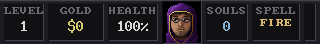
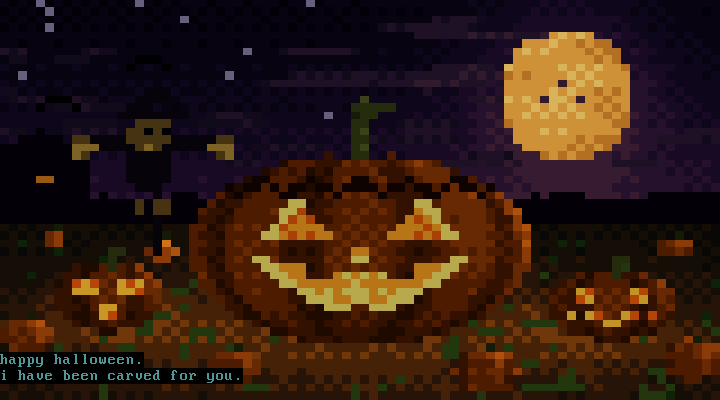
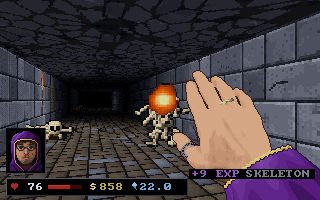

WINDOWS SCREENSAVER · v@VERSION@ · BETA
HAUNTED.EXE
A Halloween screensaver for Windows that runs in real VGA modes. A possessed 486 boots, types back and falls apart; a Wolfenstein-style crypt crawl plays itself; and if you hold H for three seconds, the crypt is yours. It's made for OLED screens: true black, whole-number scaling up to 4K, and FM-synth music generated as it plays.

Two scenes
They take turns every few minutes, with a fade of the picture and the sound. You can turn either off in the settings.

HAUNT.EXE
80×25 text, 720×400
A possessed 486 PC. It boots, a ghost types back at the DOS prompt, and the programs have been got at: EDIT rewriting AUTOEXEC.BAT for a séance, DEFRAG moving souls to the front of the disk, a modem call to a BBS on the other side, MSD finding GHOST.SYS on IRQ 13. Between them come seven half-block ANSI scenes, from the jack-o'-lantern to a ghost that rushes down a hallway. It ends in a fatal error and a CRT power-off, then reboots.

CATACOMB
Mode 13h, 320×200, 256 colours
A Catacomb 3-D style crawl through crypts generated for each level. The caster buys from the merchant, a cat on a treasure chest, then fights skeletons, shield-bearers, wall skulls, spiders, bats and wraiths with nine attack spells and nine runes, opening colour-coded vaults on the way to a rune-sealed exit. Every level is older and harder than the last.
The crypt is yours
Hold H for three seconds in either scene. A bar fills at the bottom of the screen; let go early and nothing happens. When it fills, the autopilot steps aside and the scenes stop switching until you hand it back. Any other key still ends the screensaver as usual.
| Keys | What they do |
|---|---|
| WASD | Walk and strafe. The arrow keys work too; left and right turn. Shift runs. |
| MOUSE | Turn, the way Doom does. There is no looking up or down. |
| CLICKCTRL | Cast the spell in hand where you look. Lightning and Soul Drain catch the nearest creature near the middle of the view. |
| 1–9 | Choose a spell you own: Fire Bolt, Frost Shard, Chain Lightning, Bone Spear, Soul Drain, Hellfire, Seeker Wisps, Rapid Sparks, BFS9000. The wheel works too. |
| ESPACE | Open the door ahead, unlock a vault with its key, step through the exit runes, or buy from the merchant. |
| TAB | Your wardrobe and spellbook. W and S pick a slot, A and D change what you wear there. |
| ESC | Ask to leave. The crypt will argue. |
Your defensive runes still fire on their own, as quickly and as fallibly as they do for the autopilot. Everything you buy stays in your wardrobe, and the Wolfenstein status bar stays up while you play.
LEAVE THE CRYPT?
THE CAT IS WATCHING. THE CAT IS ALWAYS WATCHING.
BACK TO THE CRYPT
- Flee to the surface ends the screensaver and saves your level, health, gold, souls and gear. Next time you start at the beginning of that level, and the next session starts from it whether you play or not.
- Stay in the dark closes the question. It's the default, so a stray Enter keeps you playing.
- Sleepwalk hands the crypt back to the autopilot, which walks on from where you stood.
Screens


Install
- Download HAUNTED.EXE and double-click it to try it in a window. F11 switches to full screen and Esc quits.
- To make it your screensaver, right-click HAUNTED.scr and choose Install, or run install.cmd from the zip. Windows asks for administrator rights.
- In Screen Saver Settings choose HAUNTED.EXE. Settings… sets the sound, brightness, scenes and monitor.
- To remove it, run uninstall.cmd as administrator.
Unsigned file: if SmartScreen stops it, choose More info, then Run anyway.
HAUNT.EXE's file manager shows your Windows user name and today's date. Keep that in mind before you share a recording. capture.cmd in the zip runs it as an ordinary window that OBS or Xbox Game Bar can record.
Built in the open
Every release is built from this repository by GitHub Actions. The MinGW-w64 cross-compiler builds the program, a headless harness renders both scenes and plays a scripted session, and the files go up with their SHA-256 checksums. It's about 15,000 lines of C with no dependencies beyond the standard Windows DLLs.
sudo apt install gcc-mingw-w64-x86-64 zlib1g-dev make zip # dist/HAUNTED.scr, dist/HAUNTED.EXE and the zip make smoke # both scenes and a scripted player in the test harness
Beta status
This is the first public build. Here is what has been tested, and how.
| Area | Evidence | Confidence |
|---|---|---|
| Playing | Scripted sessions in the harness: taking over from both scenes, shopping, every spell, the wardrobe, the question at Esc, dying, the exit, saving and loading. 170 seconds under AddressSanitizer and UBSan, clean. | HIGH |
| The autopilot | Six 50-minute simulations: every run reached level 8 to 10 and left every level by its exit. | HIGH |
| Input on Windows | The Windows build under Wine with real key presses and mouse motion, including saving to the registry and loading it back. | MEDIUM |
| Mouse feel | One fixed speed, 0.0015 radians per count, not yet tried by hand. | UNKNOWN |
| Sound | Analysed offline for clipping and levels, never heard through real speakers. | UNKNOWN |
| Real Windows | Wine only so far, including the screensaver desktop and “On resume, display logon screen”. | UNTESTED |
If something is wrong on your machine, open an issue with your Windows version and graphics card.